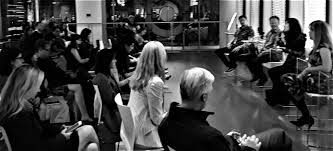
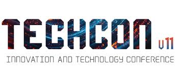
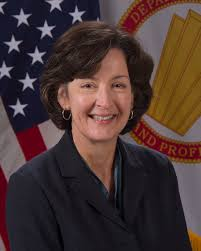
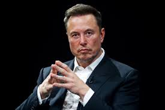
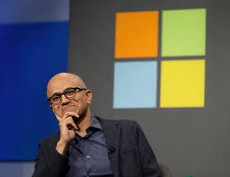
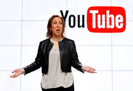

History of TechCon
TechCon began in 2010 as a small gathering of technology enthusiasts and innovators determined to share ideas that could shape the future. Over the years, it has grown into one of the most influential technology conferences worldwide, hosting thousands of participants from over 50 countries. From its humble beginnings in a university hall to today’s global stage, TechCon continues to push the boundaries of innovation, collaboration, and knowledge sharing.

Our Mission
At TechCon, our mission is to inspire and empower the next generation of innovators by creating a platform where technology, creativity, and collaboration intersect. We believe in building a future where technology solves real-world problems, connects communities, and drives positive change. Through workshops, keynote sessions, and hands-on learning experiences, TechCon provides opportunities for participants to grow their skills and transform their ideas into impactful solutions.

Notable Past Speakers
Dr. Jane Smith

A leading AI researcher from MIT, Dr. Smith has pioneered breakthroughs in machine learning algorithms that power modern smart assistants.
Elon Musk

CEO of Tesla and SpaceX, Elon Musk shared his vision for a sustainable future powered by renewable energy and interplanetary exploration.
Satya Nadella

As CEO of Microsoft, Satya Nadella discussed the importance of cloud computing and AI in transforming businesses globally.
Susan Wojcicki

Former CEO of YouTube, Susan Wojcicki emphasized the role of digital media in shaping communication, education, and entertainment.